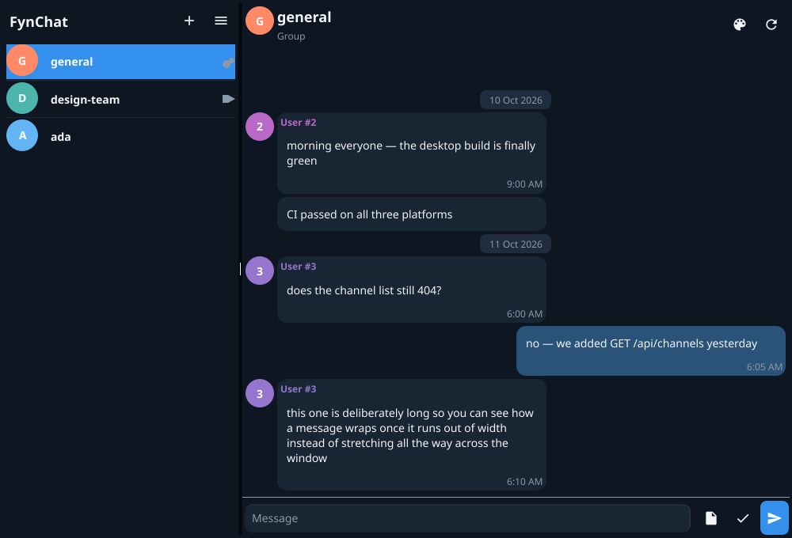

Register & login
Forms are validated before a single byte leaves the machine; the JWT lives in the shared client.
FynChat is a Telegram-style messaging platform written in Go — a native desktop client that is not an Electron wrapper and not a browser tab, a Go + PostgreSQL backend, and FCP, its own binary wire protocol. One window, two panes, zero web views.

No framework, no state-management library — just structs, fields and callbacks on top of Fyne.
Forms are validated before a single byte leaves the machine; the JWT lives in the shared client.
Avatars, channel type, one-click creation, pull to refresh. The list stays put while the chat beside it changes.
Own messages on the right, consecutive messages grouped, date separators, sender names — and live push over WebSocket.
Pick an image from disk with a live preview of how the channel will look. No image? A coloured circle with the first letter — the same trick Telegram uses.
The message box grows as you type, up to six rows, and shrinks back when the text is cleared. Emoji palette at the caret, attachments via the system file picker.
The palette icon in the header switches themes, and the choice is remembered across restarts.
Session, last open channel and theme are persisted in app preferences — the app reopens where you were, not on the login form.
Telegram Desktop layout with a draggable divider and a slide-out menu that closes on tap. Plus a settings screen for account, theme, server URL and shortcuts.
fyne.Do. Session expiry drops you back to login gracefully instead of failing every action.
One-to-one. Opening a chat with someone gets-or-creates the conversation for that pair — no room to name, no link to share.
Many people in one thread — “anyone with the link can join”. Conversations are member-gated on the server: non-members get a 403 on history, not a maybe.
“Everyone reads, only owners post.” Announcement-grade rooms with the same bubbles, avatars and shortcuts as everything else.
Click any screenshot to enlarge.
REST and WebSockets carry today's traffic. FCP is the transport built to replace them: fixed 20-byte headers, big-endian, versioned, bounded. v0.1.0 — early stage, API may change.
Key exchange, auth request & response, RPC call, RPC result, server update, ping, pong, error — RPC plus server-push, the shape real messaging needs.
A 1 MiB maximum frame size guards against the classic amplification trick; framing uses io.ReadFull and single-write sends over plain net.Conn.
Every frame reserves an HMAC field and a key-exchange stage — the bones of a real security story are in the format, waiting for the crypto to land.
fdesktop
The Fyne GUI: auth screens, channel list, chat view, settings — the HTTP client and the WebSocket view. Go 1.26, cross-compiled for Windows, macOS and Linux.
fynchat-backend
Go + Gin REST API with JWT auth, PostgreSQL persistence, contacts, channels and history — member-gated so private rooms stay private.
fynproto
The binary codec, the TCP transport and runnable client & server examples. Tagged v0.1.0 and ready for its first real deployments.
The desktop client ships a demo mode with canned contacts and channels — you can click around the whole app without standing up a server.
You need Go 1.26+. No Node, no browser, no build step to see it.
$ git clone https://github.com/fynchatdesktop/fdesktop
$ cd fdesktop
$ FYNCHAT_DEMO=1 go run .$ git clone https://github.com/fynchatdesktop/fynchat-backend
$ git clone https://github.com/fynchatdesktop/fynproto
$ go run . # point the client at it with FYNCHAT_API_URLCtrl+Enter send · Ctrl+N new channel · Ctrl+F search · Ctrl+, settings · Ctrl+/ all shortcutsIt works end to end — login, channel list, history and sending against a live database — but expect rough edges and breaking changes. Here is where things stand.
FynChat is MIT licensed and built in the open. Every repository is on GitHub.